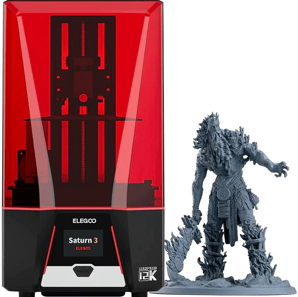
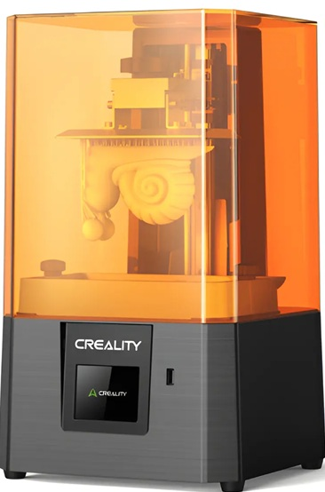

1. Impresoras de Resina (SLA / DLP): Los Reyes del Detalle
Para miniaturas de escala pequeña (como 28mm o 32mm), las impresoras de resina son la opción indiscutible. Estas máquinas utilizan luz ultravioleta para endurecer resina líquida capa por capa.
Tecnología MSLA (LCD Enmascarado)

Es el tipo más popular en el mercado doméstico. Utiliza una pantalla LCD como máscara para filtrar la luz de una matriz de luces LED UV.
- Ventajas: Logra un nivel de detalle microscópico (capas de hasta 0.01 mm) y superficies completamente lisas. Los rostros, armas y texturas de la ropa se ven perfectos.
- Desventajas: El proceso posterior es laborioso. Requiere lavar las piezas con alcohol isopropílico y curarlas bajo luz UV. Además, exige usar guantes y mascarilla por la toxicidad del material.
Tecnología DLP (Procesamiento Digital de Luz)

A diferencia de las MSLA, las impresoras DLP utilizan un proyector digital para curar la resina.
- Ventajas: Ofrecen una consistencia de luz superior en toda la pantalla y el proyector tiene una vida útil mucho más larga que las pantallas LCD.
- Desventajas: Suelen ser equipos de gama alta con precios considerablemente más elevados.